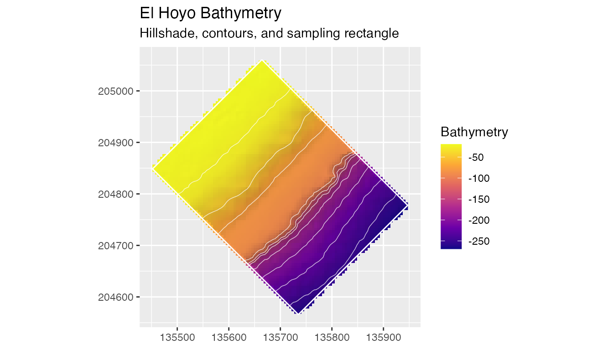

Working with user-supplied rasters
Source:vignettes/user-supplied-rasters.Rmd
user-supplied-rasters.Rmdblueterra starts with a local raster path or an existing
terra::SpatRaster. Region, datum, grid resolution, and
depth sign convention stay visible in the analysis code because those
choices affect interpretation.
Raster Paths and SpatRasters
path <- blueterra_example("hoyo")
hoyo <- read_bathy(path)
same_hoyo <- as_bathy(hoyo)
class(path)
#> [1] "character"
class(hoyo)
#> [1] "SpatRaster"
#> attr(,"package")
#> [1] "terra"
class(same_hoyo)
#> [1] "SpatRaster"
#> attr(,"package")
#> [1] "terra"
bathy_info(hoyo)
#> # A tibble: 1 × 13
#> layer nrow ncol ncell xmin xmax ymin ymax xres yres min max
#> <chr> <dbl> <dbl> <dbl> <dbl> <dbl> <dbl> <dbl> <dbl> <dbl> <dbl> <dbl>
#> 1 bathy_m 123 124 15252 135452. 1.36e5 2.05e5 2.05e5 4.00 4.00 -269. -19.4
#> # ℹ 1 more variable: crs <chr>read_bathy() is the local file reader.
as_bathy() is useful when functions need to accept either
file paths or raster objects.
Vector Inputs
Use terra::vect() for local vector files. Functions that
take zones, masks, or transect boundaries also accept a local vector
path.
rectangles <- terra::vect(blueterra_example("sampling_rectangles"))
rectangles[, c("site_id", "site_name", "feature_type")]
#> class : SpatVector
#> geometry : polygons
#> dimensions : 3, 3 (geometries, attributes)
#> extent : 134960.3, 138741.2, 204155.7, 205950.2 (xmin, xmax, ymin, ymax)
#> source : laparguera_sampling_rectangles.gpkg
#> coord. ref. : NAD83 / Puerto Rico & Virgin Is. (EPSG:32161)
#> names : site_id site_name feature_type
#> type : <chr> <chr> <chr>
#> values : hitw Hole-in-the-Wall sampling_rectangle
#> hoyo El Hoyo sampling_rectangle
#> slope Slope Clip analysis_extent
hoyo_rect <- rectangles[rectangles$site_id == "hoyo", ]
masked <- mask_bathy(hoyo, hoyo_rect)
class(masked)
#> [1] "SpatRaster"
#> attr(,"package")
#> [1] "terra"CRS
check_bathy_crs(hoyo)
#> # A tibble: 1 × 4
#> has_crs is_lonlat is_projected crs
#> <lgl> <lgl> <lgl> <chr>
#> 1 TRUE FALSE TRUE "PROJCRS[\"NAD83 / Puerto Rico & Virgin Is.\",…
terra::crs(hoyo, proj = TRUE)
#> [1] "+proj=lcc +lat_0=17.8333333333333 +lon_0=-66.4333333333333 +lat_1=18.4333333333333 +lat_2=18.0333333333333 +x_0=200000 +y_0=200000 +datum=NAD83 +units=m +no_defs"
terra::res(hoyo)
#> [1] 3.996743 3.996743Slope, transect spacing, and focal windows in map units should be
interpreted in a projected CRS. In particular, annular BPI radii require
a projected CRS and use separate x- and y-cell dimensions when the grid
is not square. Isobath corridor buffering accepts longitude/latitude
input with a warning, but a width in degrees is usually not an
interpretable corridor distance; reproject before interpreting corridor
width. blueterra does not silently reproject an input
raster for these operations.
coarse_template <- terra::aggregate(hoyo, fact = 2)
projected <- project_bathy(coarse_template, terra::crs(hoyo))
class(projected)
#> [1] "SpatRaster"
#> attr(,"package")
#> [1] "terra"Depth Convention
Bathymetric rasters are commonly stored as negative elevation or
positive depth. blueterra preserves the stored convention
unless conversion is requested explicitly.
check_bathy_units(hoyo, units = "m", positive_depth = FALSE)
#> # A tibble: 1 × 5
#> layer min max units positive_depth
#> <chr> <dbl> <dbl> <chr> <lgl>
#> 1 bathy_m -269. -19.4 m FALSE
range(terra::values(hoyo), na.rm = TRUE)
#> [1] -269.02957 -19.40236
positive_depth <- set_depth_positive(hoyo)
range(terra::values(positive_depth), na.rm = TRUE)
#> [1] 19.40236 269.02957Depth bands follow the stored values unless
positive_depth = TRUE is used.
summarize_depth_bands(
hoyo,
breaks = c(-260, -180, -120, -60, -20)
)
#> # A tibble: 4 × 8
#> depth_band metric n_cells mean sd min max median
#> <chr> <chr> <int> <dbl> <dbl> <dbl> <dbl> <dbl>
#> 1 [-260,-180) bathy_m 2152 -224. 22.1 -260. -180. -225.
#> 2 [-180,-120) bathy_m 423 -160. 16.9 -180. -120. -166.
#> 3 [-120,-60) bathy_m 1982 -83.8 10.9 -120. -60.0 -84.3
#> 4 [-60,-20] bathy_m 3077 -30.0 10.6 -60.0 -20.0 -25.3Visual Check
The first map should show the measured bathymetric surface and the relief structure that will influence slope, position, and curvature metrics.
plot_bathy(
hoyo,
contours = TRUE,
contour_interval = 25,
vectors = hoyo_rect,
title = "El Hoyo Bathymetry",
subtitle = "Hillshade, contours, and sampling rectangle"
)